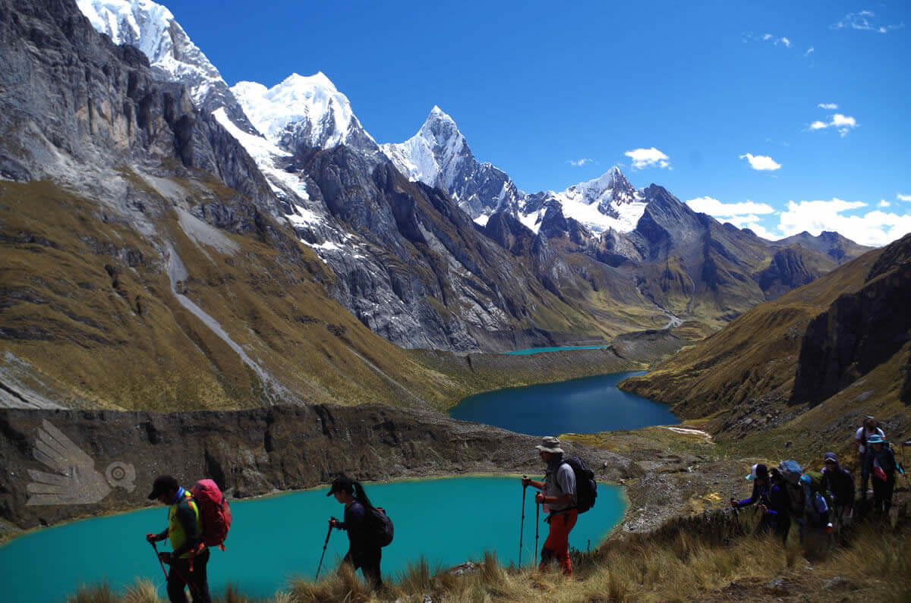
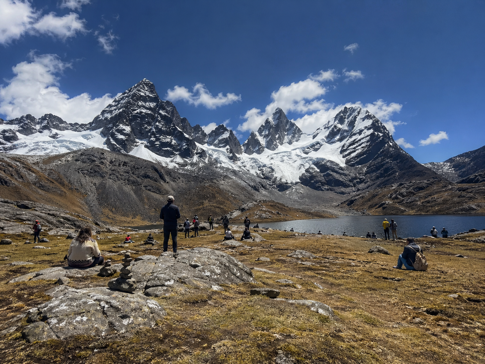
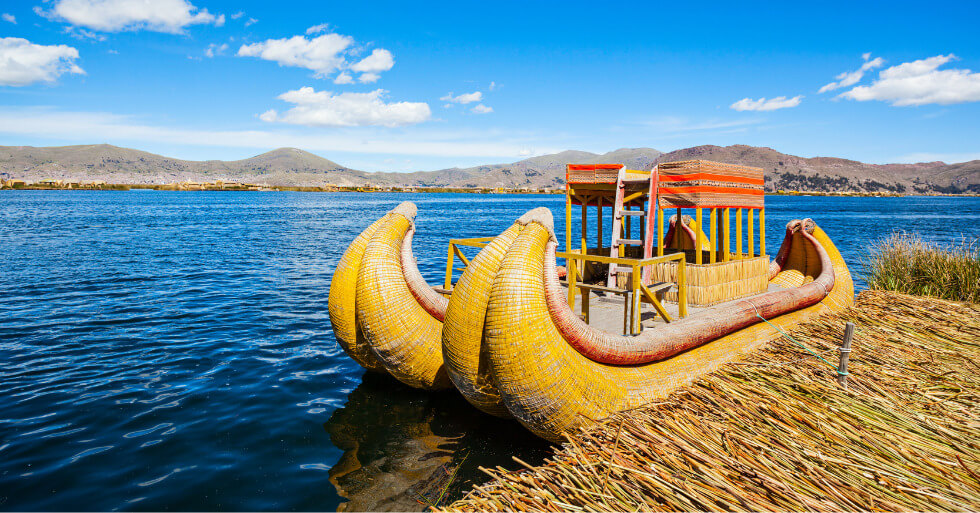
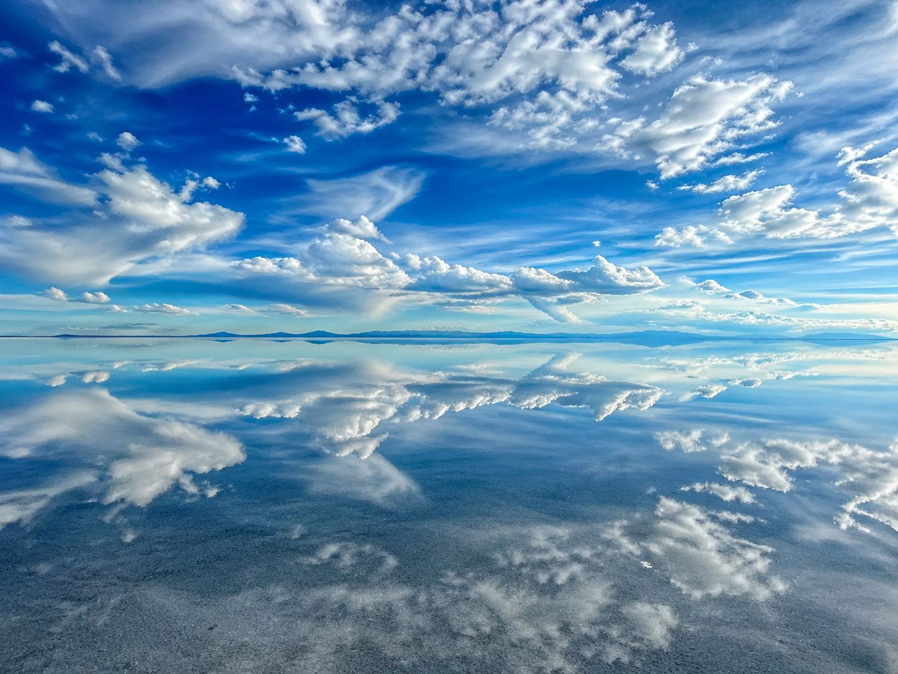

Cruza desde el desierto chileno hacia los paisajes más impresionantes de Bolivia. Una expedición inolvidable por el altiplano andino en sentido inverso.


En sentido inverso, con la misma magia
Comienza tu aventura en San Pedro de Atacama y termina en Uyuni, recorriendo algunos de los escenarios más extraordinarios de la cordillera andina. Durante 3 días y 2 noches, atraviesas la frontera para descubrir las lagunas Verde y Blanca, el desierto Dalí, aguas termales, géiseres y la Laguna Colorada.
El mismo altiplano, una perspectiva diferente. Una travesía que comienza en el desierto más árido del mundo y termina en el salar más grande de la Tierra.
Itinerario detallado

Recogida temprano en San Pedro de Atacama. Cruzas la frontera por Hito Cajón con asistencia completa. Tu primera parada: las lagunas Verde y Blanca a los pies del volcán Licancabur. Luego el desierto Dalí, aguas termales de Polques y la Laguna Colorada para la primera noche.
Madrugada para ver los géiseres de Sol de Mañana al amanecer. Árbol de Piedra, Rocas de Dalí y el desierto de Siloli. Continúas hacia las lagunas Cañapa y Hedionda con sus flamencos andinos, pasando por el valle de las rocas hasta la segunda noche.

El cierre espectacular: amanecer o visita al Salar de Uyuni con fotos creativas en la inmensidad blanca. Isla Incahuasi con sus cactus gigantes y vistas de 360 grados. Cementerio de Trenes y llegada a Uyuni, terminando esta travesía épica entre dos países.
Lo que incluye
Travesía de frontera con todos los trámites asistidos para una transición sin contratiempos por Hito Cajón.
Primeras joyas del altiplano boliviano a los pies del imponente volcán Licancabur.

Paisaje surrealista que parece un cuadro pintado en medio del altiplano andino.
Sol de Mañana al amanecer y relajación en las aguas termales de Polques.

El gran cierre: amanecer o visita al salar con fotos creativas, Incahuasi y tiempo para disfrutar el paisaje blanco.

Cierre icónico en Uyuni con los trenes oxidados que cuentan la historia del altiplano.

¿Estás en el norte de Chile?
Una ruta perfecta para quienes viajan por el norte de Chile y quieren continuar hacia Uyuni sin perderse ninguno de los grandes paisajes del altiplano. La misma magia, en sentido inverso.